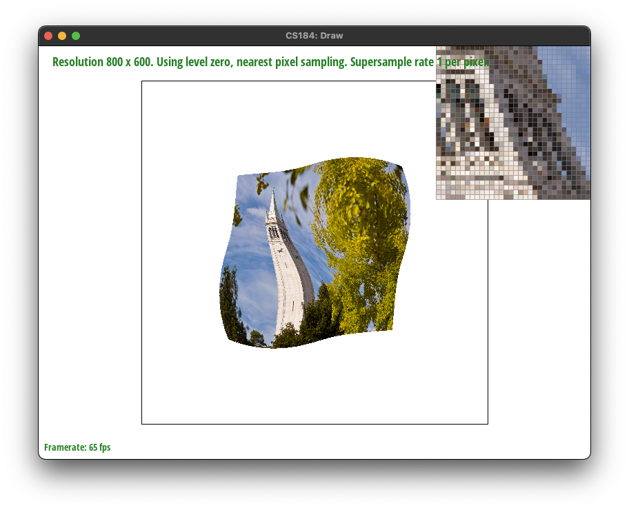
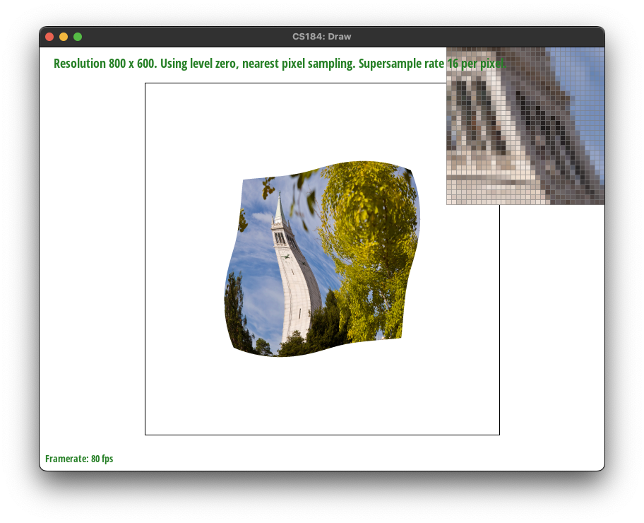
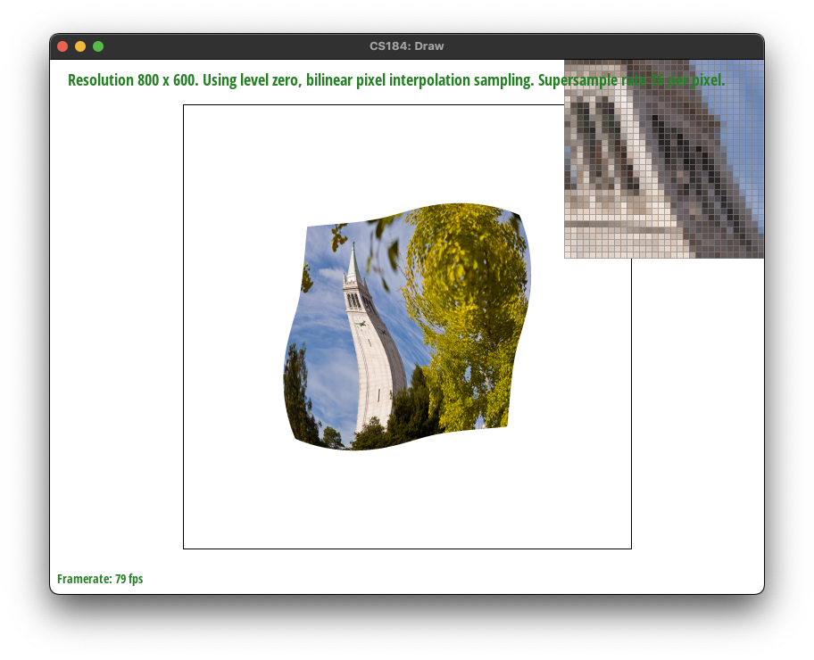

Link to github-pages: https://cal-cs184-student.github.io/hw-webpages-sp24-michaelwiradharma/hw1/index.html
Overview
Give a high-level overview of what you implemented in this homework Think about what you've built as a whole. Share your thoughts on what interesting things you've learned from completing the homework.
Section I: Rasterization
Part 1: Rasterizing single-color triangles
In this section, I wrote a rasterization algorithm which incorporates 3 separate line tests to check for whether a point lies within the given triangle. I made use of the `Triangulation::inside` function to do this, then used `fill_pixel` to color the pixel at that specific (x,y) coordinate to color the triangle. At a higher level, I looped through every pixel which lies within the triangle, bounding the min and max coordinates of the triangles vertices to ensure the algorithm does not iterate through the entire frame buffer for each call to `rasterize_triangle`.

Part 2: Antialiasing triangles
For task 2, I made use of the suggested data structures (i.e. sample_buffer) and modified some functions in the rest of the rasterization pipeline to implement antialiasing via supersampling. Firstly, I increased the size of the sample_buffer array by a factor of the sample_rate. Then, through the same algorithm from `rasterize_triangle`, I place each of the supersampled pixels into the sample buffer. Finally, inside rasterize_triangle, I averaged the color value of each picture according to the super-sampled pixels from the sample_buffer; this is exactly as shown in lecture.
Supersampling is useful because it reduces "jaggies", or the sharp edges that makes pictures look rough or less sharp from a distance. This is shown in the images below (in order, super-sampled by factors of: 1, 4 ,16). The image super-sampled by a factor of 16 looks much sharper than the first image.


Part 3: Transforms
Modifying the transformation matrices for this section was very straightforward, simply following the ones as taught in lecture.
The image below is an attempt at representing cubeman sitting down cross-legged on the floor, waving hi at the viewer.
Section II: Sampling
Part 4: Barycentric coordinates
Barycentric coordinates give you a way to represent coordinates within a triangle as a weighted average of the vertices. The coordinates are these weights respectively. Each weight can be calculated as a percentage of the distance from an edge to the vertice of the triangle. This is represented in the drawing below.
Part 5: "Pixel sampling" for texture mapping
We learned two types of pixel sampling in lecture: nearest and bilinear. Sampling in this case is done in order to match the triangles to their respective textures. Nearest sampling acts almost like a direct translation from the frame's coordinates to the texture's coordinates. On the other hand, bilinear sampling attempts to smooth the textures by supersampling a 2x2 section of the nearest texture's pixels. The implementation I used follows this logic directly, where nearest neighbor sampling was done simply through rounding and bilinear through sampling the four coordinates and performing linear interpolation to get the average.
|

|
|
|

|

|
The differences are a lot more subtle than the changes between 1pixel and 16pixel supersampling. However, between the left and right columns, especially between Figure 1 and Figure 2, one can identify through the pixel inspector that the textures are smoother on the right image. This is bilinear sampling attempting to smooth out the sharp changes in color from the texture.
In general, bilinear is likely to excel in situations where objects in the image 'appear' far away, especially when sharp changes in color (higher frequencies) are present nearby. This is when there are likely to be larger differences between the two, as nearest sampling won't perform any blending, but bilinear will.
Part 6: "Level sampling" with mipmaps for texture mapping
Section III: Art Competition
If you are not participating in the optional art competition, don't worry about this section!